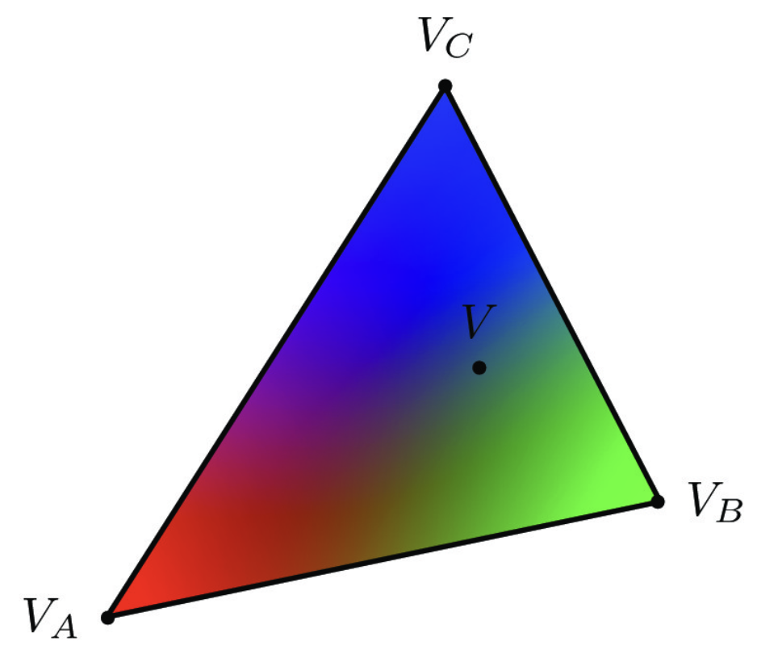

Overview
An overview of the project, your approach to and implementation for each of the parts, and what problems you encountered and how you solved them. Strive for clarity and succinctness.
Task 1
Task 2
Task 3
Task 4
- In this task, we seek to be able to generate triangles with an interpolated color scheme. This interpolation can be performed by using the colors of the sampled vertices of the triangle to infer the color of the points within it. This is accomplished using barycentric coordinates.
- Barycentric coordinates re-encode the coordinates of the triangle in terms of a weighted sum of their vertices. For example, take a triangle with vertices A, B, and C. The centroid of this triangle is the mean location between these three points, i.e., a weighted sum of the vertex vectors. Similarly, every point in the triangle (the convex hull of the three points) can be reached with a weighted sum of A, B, C.
- For example, P = aA + bB + cC, given a + b + c = 1, maps to any point in the triangle. The use of a, b, c to represent points on the triangle is known as using barycentric coordinates. In the image below, the triangle's vertices are colored red, blue, and green. Points in between are colored by a weighted sum of the RBG vectors for red, green and blue, according to the barycentric coordinates. 